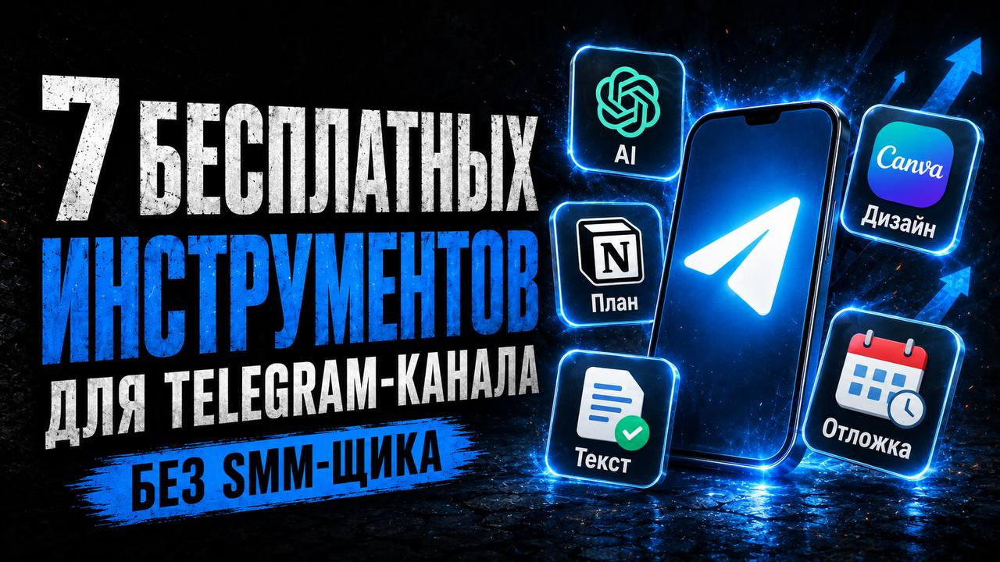
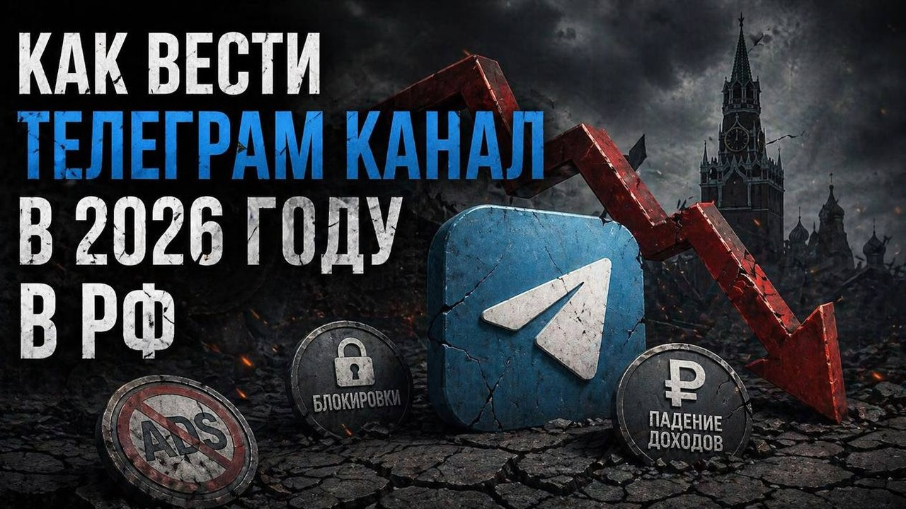

Следит за источниками
Добавьте до 10 открытых Telegram-каналов. Радар регулярно проверяет новые публикации без ручного просмотра ленты.
Бесплатный Пульс ниши в Telegram
Следит за открытыми каналами в вашей нише, замечает сильные публикации и превращает найденные сигналы в оригинальный контент-план, посты и готовые публикации.
Начните с радара ниши
Добавьте открытые каналы, которые стоит держать в поле зрения
Бот соберёт публикации за 7 дней, покажет заметные темы и поможет использовать их без копирования чужого контента.
Радар ниши
KonturSMM следит за открытыми публикациями выбранных каналов, сравнивает их с обычными показателями источника и отмечает действительно заметные сигналы.
Добавьте до 10 открытых Telegram-каналов. Радар регулярно проверяет новые публикации без ручного просмотра ленты.
Сравнивает просмотры с обычным уровнем каждого источника и показывает публикации, которые выделяются на его фоне.
Объединяет темы и закономерности за 7 дней в компактную сводку, чтобы было понятно, о чём сейчас стоит говорить.
Предлагает оригинальный угол, собирает план и готовит собственный пост в стиле вашего канала без копирования.
Как работает
Радар помогает заметить рабочую тему, но решение остаётся вашим: KonturSMM адаптирует её под профиль канала, создаёт черновик и доводит материал до выхода.
Отправьте ссылки на открытые источники, за публикациями которых хотите следить.
Выберите уведомления обо всех новых постах или только о тех, которые заметно сильнее обычных.
Соберите план на 7 дней, подготовьте пост, улучшите его, добавьте визуал и отправьте в канал сразу или по расписанию.
Возможности
KonturSMM хранит профиль вашего канала, черновики и версии материалов. Он знает, для кого вы пишете, помогает выбрать тему и ведёт публикацию по понятному сценарию вместо бесконечных промптов.
Учитывает нишу, аудиторию, продукт, тон и задачи, чтобы результат был ближе к вашему каналу, а не к безличному шаблону.
Сначала отмечает сильные стороны поста, затем показывает точки роста и помогает улучшить начало, структуру, смысл и CTA.
Сохраняет материалы, позволяет улучшать их по шагам и возвращаться к предыдущим вариантам без потери результата.
Создаёт изображение, публикует готовый материал в подключённый канал сразу или ставит его на нужное время.
Рост Telegram-канала
Радар сокращает путь до рабочей темы, а профиль канала, черновики и публикация помогают не потерять её по дороге до аудитории.
Когда идеи, разборы и заготовки появляются быстро, канал чаще получает новые касания с аудиторией.
Пульс ниши убирает бесконечный поиск тем и даёт опору для собственного плана и оригинальных публикаций.
Тарифы закрывают не разовый текст, а поток: посты, CTA, идеи, улучшения, визуалы и контент-планы.
Графики показывают модель эффекта от системной работы с контентом и не являются гарантией роста. Реальный результат зависит от ниши, продукта, продвижения, частоты публикаций и качества материалов.
Начните бесплатно
Добавьте открытые каналы, включите подходящий режим уведомлений и соберите первый Пульс. Из найденных сигналов можно сразу подготовить собственный план.
Для кого
Используйте KonturSMM как радар, редактора и рабочее место для подготовки Telegram-контента.
Чтобы замечать важные разговоры в нише, добавлять собственную экспертизу и регулярно выходить к аудитории с актуальной темой.
Результат: актуальность без копированияЧтобы следить за рынком, быстро готовить посты про продукт, кейсы и предложения и публиковать их без отдельного отдела.
Результат: система без лишней рутиныЧтобы держать несколько источников в поле зрения, собирать планы, быстрее готовить варианты и сохранять историю материалов.
Результат: больше скорости и контроляСтатьи KonturSMM
Разборы механик из видео, наблюдения за контентом и рабочие материалы о развитии Telegram-каналов.

Практичная связка для поиска тем, подготовки постов, визуалов, проверки текста и публикации без контент-отдела.

Почему нестабильность площадки не означает, что бизнесу стоит исчезнуть из поля зрения аудитории, и как перестроить работу с каналом.
FAQ
Ответы на вопросы, которые обычно возникают перед переходом в бота.
Можно начать с Радара ниши: добавить открытые Telegram-каналы, включить уведомления и получить сводку заметных тем за 7 дней. Бесплатный разбор собственного поста также остаётся доступным.
Обычной нейросети нужно каждый раз объяснять задачу и заново передавать контекст. KonturSMM хранит профиль канала, следит за выбранными источниками, сохраняет черновики и версии, помогает создать материал и опубликовать его по понятному сценарию.
До 10 открытых Telegram-каналов, публичные страницы которых доступны по ссылке t.me. Закрытые каналы и приватные публикации бот просматривать не может.
Нет. Радар находит тему и механику, а затем помогает раскрыть их с вашей позиции, под вашу аудиторию и стиль канала. Чужой текст не должен становиться вашим черновиком.
Да. После подключения собственного канала можно сохранять версии, создавать изображения и отправлять готовые публикации сразу или ставить их на выбранное время.